1 Introduction to Statistics
Learning Objectives
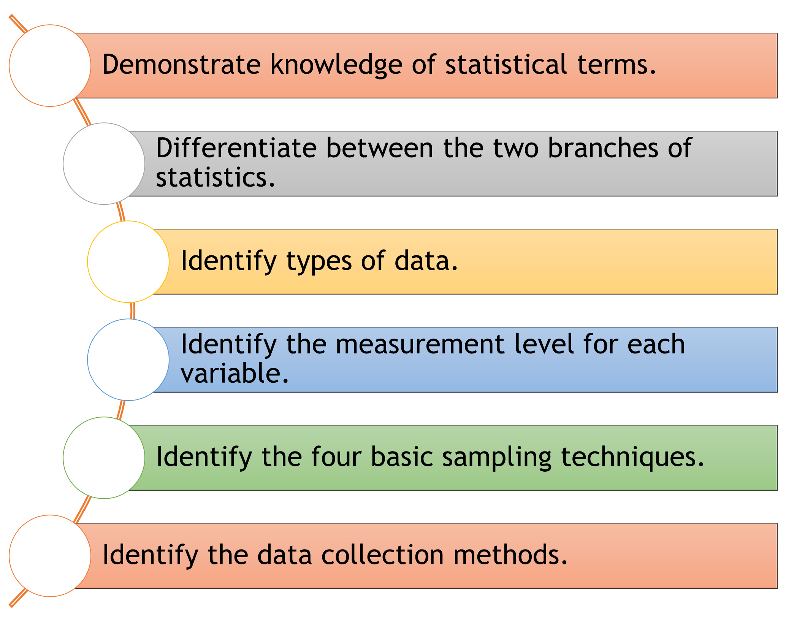
1.1 Introduction
Why study statistics?
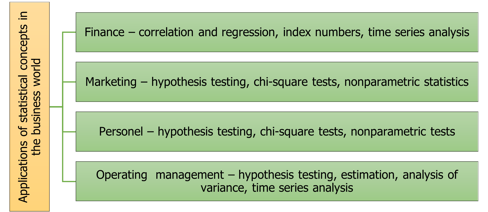
1.2 What is Statistics?
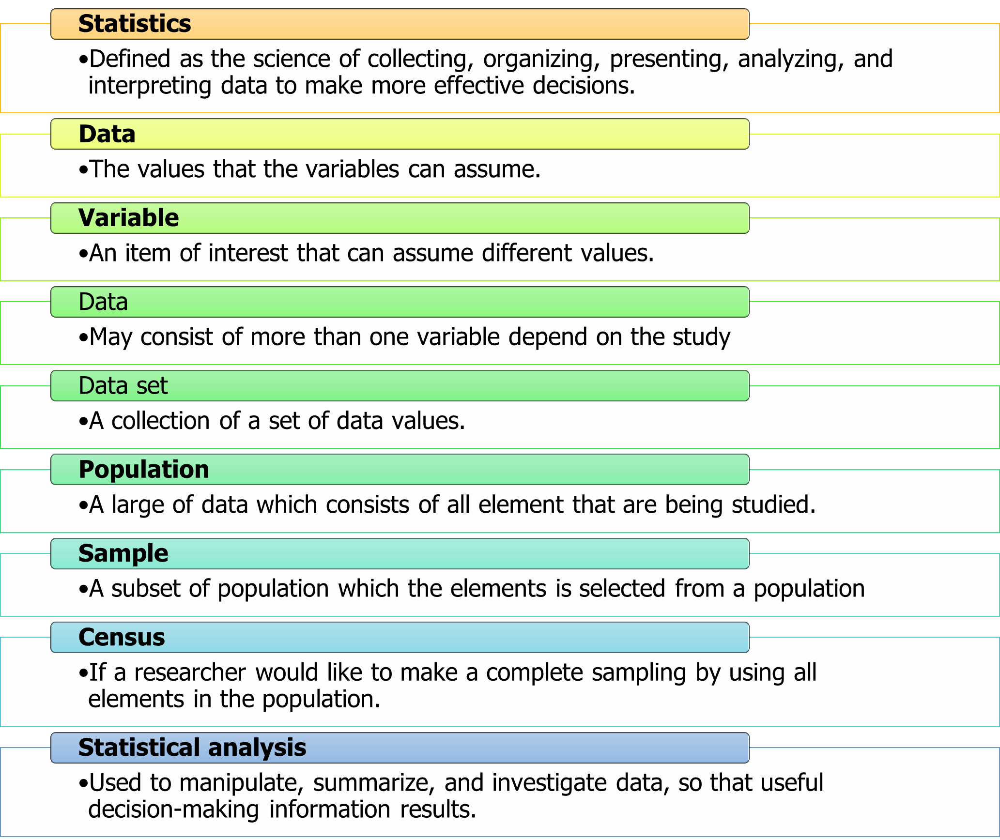
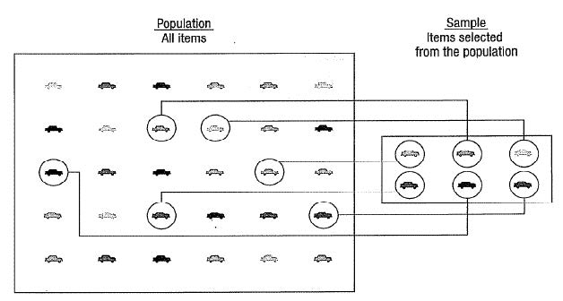
Example 1.1
Determine the population, sample, and variable(s).
The Dean from College YY would like to determine students’ performance through online distance learning (ODL). From 1000 students, the dean decides to select only 300 students as a respondent. The information about the number of hours spent and assessment marks are collected.
A headmaster of School Y conducted a study on students’ satisfaction (strongly disagree=1, disagree=2, neutral=3, agree=4, strongly agree=5) with online distance learning conducted by their teachers. The headmaster selects only 10 out of 50 classes in School Y. The study included all students in these classes.
Answer
Population: All 1000 students from College YY. Sample: 300 students from College YY. Variable: i) Number of hours spent ii) Assessment marks
Population: All students from 50 classes of School Y. Sample: Students from selected 10 classes. Variable: Students’ satisfaction
1.3 Type of statistics
Generally, statistics is divided into two broad categories, depending on how data are used. The two categories are Descriptive Statistics and Inferential Statistics. A Descriptive Statistics describe a summary information about variables in data. While, Inferential Statistics uses sample data to make an inference or draw a conclusion about the population. The description of Descriptive Statistics and Inferential Statistics shown in Table 1.1.
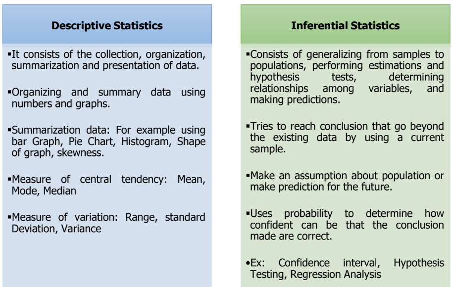
Example 1.2
- The average donation received from Five Top Company was RM50000.
- In a research study found that anxiety with behavioral intention has a significant inverse causal effect on the behavior of students using communication technology.
Answer
- Descriptive Statistics
- Inferential Statistics
1.4 Type of data
The term “Data” refers to a collection of measurements made on one or more observational units that used to describe situations or events. Statistical data are usually obtained by counting or measuring items. Depending on the sources, statistical data are classified into two types; Primary Data and Secondary Data.
Primary data is a data that are collected for the first time and are thus original in nature.
Secondary data have already been compiled or collected by some other persons and are available for statistical analysis.
The advantages and disadvantages of primary and secondary data shown in Table 1.2.
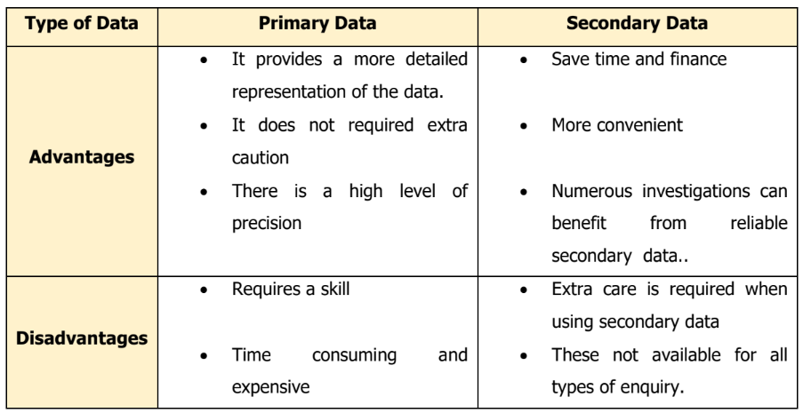
Example 1.3
Describe the type of data below.
- A statistics textbook
- A mailed questionnaire
Answer
- Secondary Data
- Primary Data
1.5 Data collection
Data are collected in a variety of ways. For primary data, one of the most common method is through the use of survey. Survey is a research process of collecting a data that can be done by using a variety of method. The most common methods are telephone surveys, questionnaire survey and the personal interviews. The descriptions of these methods are shown in Table 1.3.
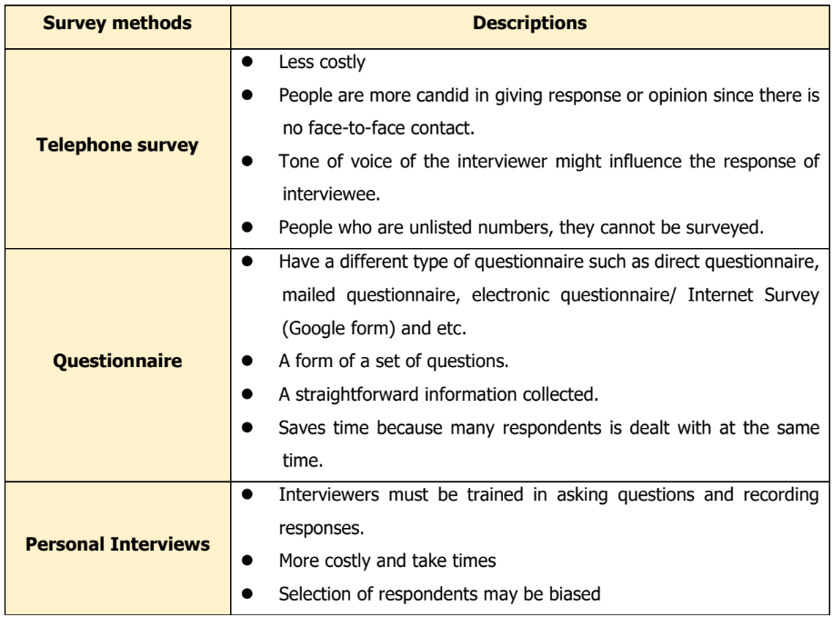
Secondary data are collected from readily available sources such as websites, article journals, books, etc. It supplies second-hand data collection from other sources, either from individuals or an organization. Among the top sources of secondary data are:
- Journal articles that comment on or analyse research
- Textbooks
- Dictionaries and encyclopaedias
- Book and interpret, analyse
- Political commentary
- Biographies
- Dissertations
- Newspaper editorial/opinion pieces
1.6 Variables and types of variables
Variables can be classified as Quantitative Variable or Qualitative Variable.
1.6.1 Quantitative Variables
Quantitative data is an observation that are measured on a numerical scale. Basically, the quantitative data are in the form of values, percentage, frequency, or numbers. This type of data can be visualized using diagram such as tables, graphs, and histogram.
If the variables in the data are being studied, the variables that are report numerically is called quantitative variable.
Quantitative variables are always in numbers and are the result of counting or measuring attributes of a population. Quantitative variable can be separated into two subgroups:
Discrete can assume only integer value (if it is the result of counting, examples the number of students of a given ethnic group in a class, the number of books on a shelf)
Continuous can assume any value over a continuous range of possibilities (if it is the result of measuring, examples distance traveled, weight of luggage)
1.6.2 Qualitative Variables
Qualitative data is opposite with quantitative data. Qualitative data provide varieties of items in terms of categories base. It is generally described by words or letters. For example, in qualitative data may contains information about gender, age category or pass or fail.However, if the characteristics or variables being studied is in categorical or non-numerical it is called as qualitative variable.
Qualitative variables can be separated into two subgroups:
dichotomic (if it takes the form of a word with two options (gender - male or female)
polynomic (if it takes the form of a word with more than two options (education - primary school, secondary school, and university)
Usually, a researcher will represent a qualitative variable with a proportion or percentage, while a pie chart, pareto chart, or bar chart will use to visualize a qualitative variables.
Remember, in dealing with qualitative variable, calculating the mean or average makes no sense.
Example 1.5
State whether the following quantitative or qualitative variable.
- Number of diabetes patients
- Pizza sizes (small, medium, and large)
- Cholesterol count
Answer
- Quantitative (Discrete)
- Qualitative
- Quantitative (Continuous)
1.7 Level of measurement
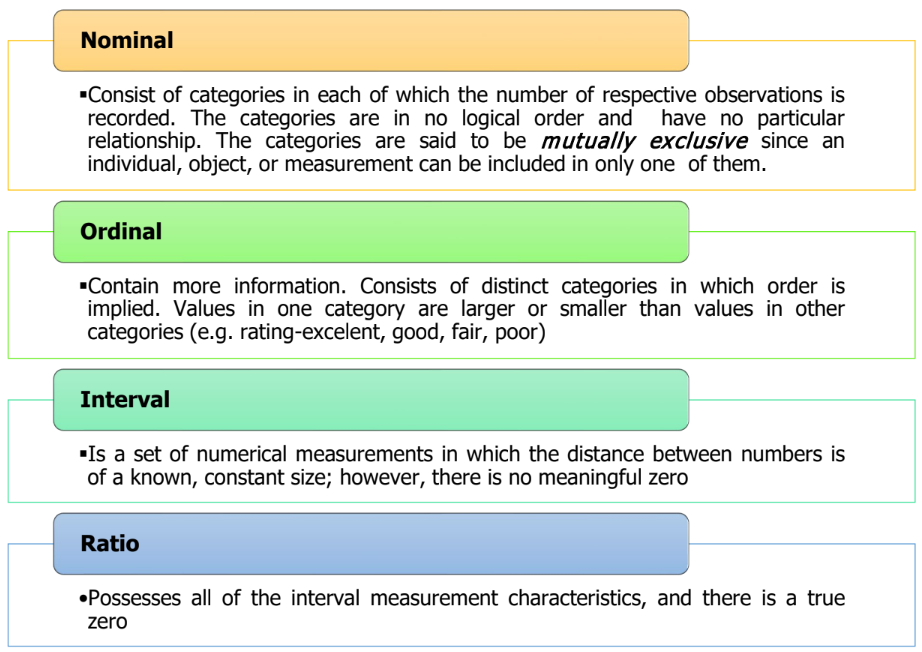
Example 1.6
State the level of measurement for each variable below:
- The number of students in KAM2283A
- Temperature in Malaysia
- Stress level (Mild, Medium, Severe, Very Severe)
- Food preference
Answer
- Ratio
- Interval
- Ordinal
- Nominal
1.8 Sampling
Sampling is a process of taking a subset of element from a population. The sample taken from the sampling process have a same characteristic with its population. However, the samples selected are not a perfect representative of population depending on where they are selected. Therefore, there always occur some error in the result of analysis called as sampling error. A sampling error is the difference between the results obtained from a sample and the results obtained from the population.
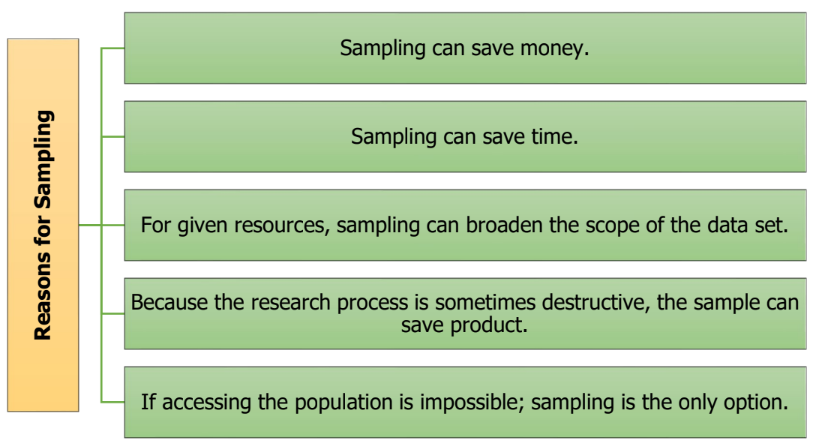
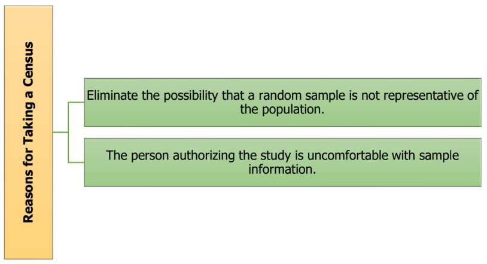
1.9 Sampling Method
Random vs Non-Random sampling
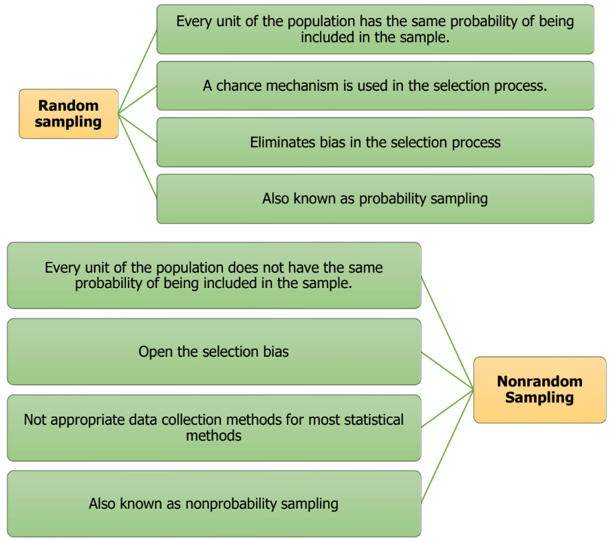
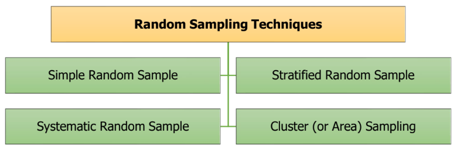
1.9.1 Simple Random Sample
- Number each frame unit from 1 to N.
- Use a random number table or a random number generator to select n distinct numbers between 1 and N, inclusively.
- Easier to perform for small populations.
- Cumbersome for large populations
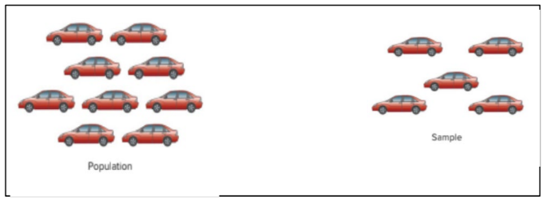
1.9.2 Systematic Sampling
- Convenient and relatively easy to administer.
- Population elements are an ordered sequence (at least, conceptually).
- The first sample element is selected randomly from the first k population elements.
- Thereafter, sample elements are selected at a constant interval, k, from the ordered sequence frame.
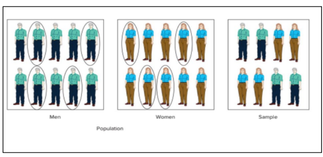
1.9.3 Stratified Random Sample
- Population is divided into nonoverlapping subpopulations called strata.
- A random sample is selected from each stratum.
- Potential for reducing sampling error.
- Proportionate – the percentage of the sample taken from each stratum is proportionate to the percentage that each stratum is within the population.
- Disproportionate – proportions of the strata within the sample are different than the proportions of the strata within the population.
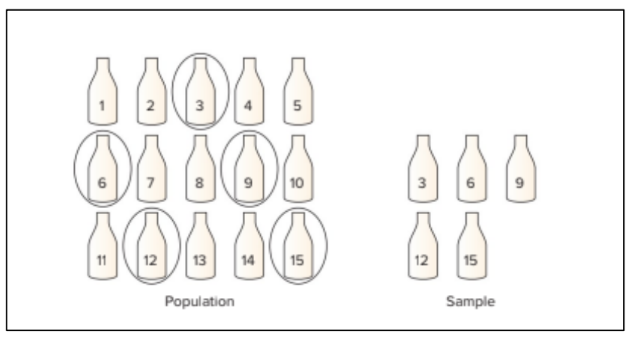
1.9.4 Cluster Sampling
- Population is divided into non overlapping clusters or areas
- Each cluster is a miniature, or microcosm, of the population.
- A subset of the clusters is selected randomly for the sample.
- If the number of elements in the subset of clusters is larger than the desired value of n, these clusters may be subdivided to form a new set of clusters and subjected
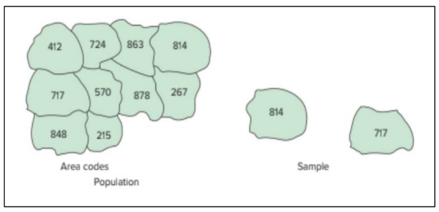
Advantages
- More convenient for geographically dispersed populations.
- Reduced travel costs to contact sample elements.
- Simplified administration of the survey.
- Unavailability of sampling frame prohibits using other random sampling methods.
Disadvantages
- Statistically less efficient when the cluster elements are similar.
- Costs and problems of statistical analysis are greater than for simple random sampling to a random selection process.
1.9.5 Nonrandom Sampling
- Convenience Sampling: sample elements are selected for the convenience of the researcher.
- Judgement Sampling: sample elements are selected by the judgment of the researcher.
- Quota Sampling: sample elements are selected until the quota controls are satisfied.
- Snowball Sampling: survey subjects are selected based on a referral from other survey respondents
1.10 Exercise 1
- A private company manager is interested in studying the relationship between time spent on social media and employee performance. He believed that the more time spent on social media, the more likely the performance drops. The performance of the employee is categorized as excellent, moderate, and low. A random sample of 500 employees was selected for this study, and the time spent on social media was recorded.
- State the population and the sample for the above study.
- Identify whether the study was conducted by a census or sample survey. Give a reason.
- Identify the variable of this study.
- A lecturer from a private college wanted to estimate how much their students spent (in RM) on reference books for a semester. From a total of 300 students, only 12 students randomly selected as a sample. The distribution of the number of students is shown in the following table.
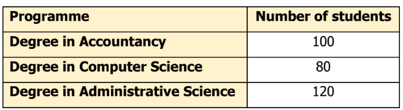
- State the population and sample.
- State the variable of the study.
- A registrar in University F would like to study the readiness of students returning to campus after one year staying at home learning through online platform. For this purpose, students are listed according to their student ID. An online questionnaire was distributed randomly to 1000 students. The readiness is scale from 1 (Strongly not ready) to 10 (Strongly ready).
- State the population, sample and sampling frame.
- Identify the variable of interest.
- Determine whether Descriptive Statistics or Inferential Statistics were used.
- Based on the bar chart, the highest sales for Company XYZ are on December.
- There is an association between gender and level of stress.
- A scientist found that a good laugh significantly reduces person’s stress level.
- The distribution number of male patients received a treatment in Hospital Y is skewed to the right.
- Sales for Company Y are more consistent than Company X.
- Based on a sample of 300 students, the dean has enough evidence to conclude that students more prefer face-to-face classes compared to online classes.
- A study conducted by a research network found that people with fewer than 12 years of education had lower life expectancy than those with more years of education.
- In 2025, the Save Hypermarket is predicted their sales to be RM 5.3 billion.
- Decide whether it is primary data or secondary data.
- Personal Interview.
- Data from Statistical Department.
- A study is undertaken to find the labour productivity of Hypermarket Berjaya at two locations. For this purpose, selected laborers in both locations is contacted and their productivity figures are noted.
- Data obtained from the Kaggle website is being used by students for research courses.
- Data collected by the Ministry of Health are being used by the scientist, academicians and etc for their further study.
- State whether the following quantitative (discrete or continuous) or qualitative variable.
- Distance
- Litres of petrol
- Level of anxiety
- Depression score
- Sizes of drinks sold by restaurant (small, medium and large)
- Number of patients waiting for treatment
- Length of time
- Temperature at a Hawaii Resort
- Rating of lecturer
- State the level of measurement for the following variable.
- Size of blouse (36,38,40,42)
- The height of building
- The number accident case .
- Stress level (Mild, Medium, Severe, Very Severe)
- Satisfaction level (1(very unsatisfied) to 5(very satisfied)
- What types of sampling technique used for each situation?
- A lecturer conducts a study to collect data on students’ performance in the Statistics course. The lecturer randomly selects five classes from ten and samples all students in those five classes.
- Newton Car operates ten dealerships in ten states, including Sabah and Sarawak. The Head of Service Department is interested to know about the car problems encountered by their customers. Only 150 customers are chosen as respondents for each branch.
- The manager of Hotel Hibiscus instructed an HR Department to ask about customer satisfaction after a stay at their hotel. The customers are selected randomly.
- The number of students passed in probability subject decreasing every semester. A lecturer is concerned with the issue and wants to know the problem and identify the issue. From 50 students, only 10 students with weak academic records are chosen.
- In order to choose a suitable platform for an online class, students were asking for their opinion.
- State the best sampling method that can be used for the study below:
- A group of researchers conducted a study on the satisfaction of parents with online learning classes for primary school in Kedah. For that purpose, the researchers set out to conduct a survey and limit a selection of sample, 100 parents from rural areas and 200 parents from urban area.
- The audit team selects every 20th box out of a total of 100 boxes to test the quality of Product X. All of the product X in the selected box is sampled in order to assess the product’s defects.
1.11 Turorial 1
Question 1
A group of researchers wanted to investigate the perception of the married couple towards on the factors that contributed to the marriage problems in Perak. The researchers distributed the questionnaires to 500 randomly selected couples from four districts (I, II, III, IV) in the state. Twenty-five items on the perception towards on the factors contributed to the marriage problems were measured using Likert Scale (strongly agree=1, agree=2, neutral=3, disagree=4, strongly disagree=5). The distribution on the number of married couples is shownin the following table.
| District | Number of married couples |
|---|---|
| I | 500 |
| II | 450 |
| III | 300 |
| IV | 350 |
- State the population of the above study.
- State the sampling frame for the above study.
- State the variable involve for this study. Hence, identify the corresponding scales of measurements.
- Name the sampling method used in this study. Explain your answer in the context of the study.
Question 2
In the automobile industry, customer service is a crucial factor affecting car sales. The management of a reputed automobile company is interested in determining the level of customers’ satisfaction with the service provided by the company’s service centres. The company has altogether 40 service centres throughout Malaysia. A sample of eight centres was selected at random. Questionnaires are disseminated to all customers who service their cars at these eight selected services centres on one selected day (the day of the survey). One of the questions asked is satisfaction level on the services provided (using rating: good, fair, poor)
- State the population of the study.
- Name the variable of interest for the above study. State its type and level of measurement.
- Identify the sampling technique used. Explain briefly how the sample is selected.
Question 3
A researcher wishes to study students’ satisfaction (strongly disagree=l, disagree=2, neutral=3, agree=4, strongly agree=5) towards the services provided by the Academic Affairs in Nursing College X. The researcher chooses only 10 out of 50 classes. All the students from these 10 classes will be used for the study.
- Identify the population for the above study.
- State the sampling frame for the above study.
- Name the variable of interest for the above study. State its type and its level of measurement.
- State the sampling technique used in this study.
Question 4
A researcher is interested in studying the career aspirations of students from the Faculty of Electrical Engineering, which consists of 30 classes. The researcher intends to choose all the students from 5 classes for the study.
- State the population and the sample for the above study.
- Identify the variable of interest for this study and state the type of variable used.
- What is the sampling technique used in this study?
- Name ONE (1) method of data collection suitable for this study? Give ONE (1) advantage of using this method.
Question 5
A survey on the workers’ satisfaction levels was carried out at Company XY. The company has 24 branches with the same setting. A sample of 6 branches was selected at random. All workers who work at these 6 branches were then selected for the study.
- State the population of the study.
- State the sampling frame for the survey.
- State the variable for this study. What type of variable is it?
- Name the sampling technique used in the study.
- Besides the sampling technique used in (d), briefly explain how the sample of 6 branches can be selected using systematic sampling technique.
- What is the most suitable data collection method to be used for the study? Give one advantage of the suggested method.
Question 6
Employers were surveyed to determine the level of satisfaction with their employees who are graduated from ICT courses at University YY. This study involved 50 employers from ICT private companies from five randomly chosen states out of 14. All selected employers were asked about gender, length of service (years), how well graduates meet employer expectations (1=Excellent, 2=Average, and 3=Poor), and overall employer’s satisfaction with graduates (1=Excellent, 2=Average, and 3=Poor).
- State the population and sampling frame.
- Name any TWO (2) variables from the study. Hence, state its type of variable.
- Name the sampling technique employed in the study.
- Suggest the data collection method that suitable to the study. Give ONE (1) advantage of the method used.
Question 7
A manager at one of the popular Telco company is currently conducting a survey regarding the service failure at their service counter. The main objective of the survey is to find out the factors that cause the failure. He randomly selected five service counters from ten available service counters all over Malaysia. A questionnaire is distributed to all the customers at the five selected service counters. The information collected from the customers include age, gender, occupation, income, rating of service (0 to 100) and service quality (poor, moderate and good).
State the population in the study.
State the sampling technique used in the study.
Identify one ordinal variable and one ratio variable obtained from the study.
The followings are the statistics produced from the study. Identify whether each statement is a descriptive or inferential statistics.
- 45% of the sample customers work in the government sector.
- Based on the sample, it can be concluded that there is an association between gender and service quality.
- We are 90% confident that the average rating of service of for the customers falls between 60 and 90.
1.12 Answer to Tutorial 1
Question 1
- All married couples in Perak.
- List of all married couples from four districts in Perak.
- Perception; Nominal.
- Stratified Sampling Technique. Determine the number of samples from each districts :
| District | Number of married couples | Number of samples |
|---|---|---|
| I | 500 | (500/1600)*500=156 |
| II | 450 | 141 |
| III | 300 | 94 |
| IV | 350 | 109 |
| 500 |
Question 2
- All customers at all 40 services centre in Malaysia.
- Customer satisfaction; qualitative; ordinal
- Cluster sampling technique.
Question 3
- All students at Nursing College X.
- List of all students from ten classes.
- Students’ satisfaction; qualitative ; ordinal
- Cluster sampling technique.
Question 4
- Population : All students from Faculty of Electrical Engineering. Sample: All students from five classes.
- Career aspiration; qualitative; nominal
- Cluster sampling technique
- Self-administrative questionnaire. Advantage: quick response
Question 5
- All workers at Company XY.
- List of all workers at six branches at Company XY.
- Satisfaction; qualitative
- Cluster sampling technique.
- N=24, n =6; k= 24/6 = 4; in first interval choose any number from 1 until 4. let say, choose number 2. The number 2 will be the first sample. Next interval from 5 until 8. Continue select the samples until you reach 6 samples.
- Email questionnaires.
Question 6
- Population: All employers in the ICT private companies who are employed ICT graduates from University YY. Sampling frame: A list name of ICT company who are employed ICT graduated from University YY.
- Gender (Qualitative); length of services (Quantitative Continuous), employer’s expectations (Qualitative), and employer’s satisfaction with graduates (Qualitative).
- Cluster sampling
- Internet survey (Google form)/ Electronic questionnaire. Fast and short in time span to complete the questionnaire, cheaper. Any relevant answer.
Question 7
- Population: All customers from 10 service counters all over Malayisa
- Cluster sampling
- Ordinal variable : service quality; ratio variable : age/ income
- Descriptive, ii) Inferential iii) Inferential